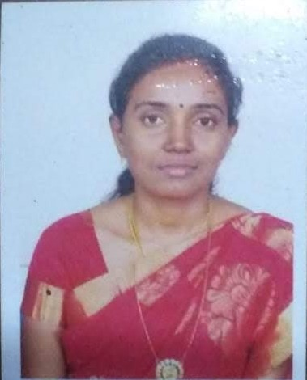

Saranya Palanivel

Summary
To use my technical, analytical and interpersonal skills to serve the firm. Good problem solver, able to multitask and consistently finishes projects before their deadlines.
Education
- Master of Technology in Software Engineering
- Periyar Maniammai University, Tamil Nadu, India
- Bachelor of Computer Science and Engineering -
Kongu Engineering College, Tamil Nadu, India
Work Experience
- 2018-2023 Assistant Inspector,
Department of Local Fund & Auditing,
Government of Tamil Nadu, India
- 2017-2018 Assistant,
Department of Commercial Taxes,
Government of Tamil Nadu, India
- 2016-2017
Junior Assistant,
Department of Registration
Government of Tamil Nadu, India
Skills
- HTML, Javascript, css
- Good understanding on principles of object oriented programming
- Understanding of Data structures and algorithms